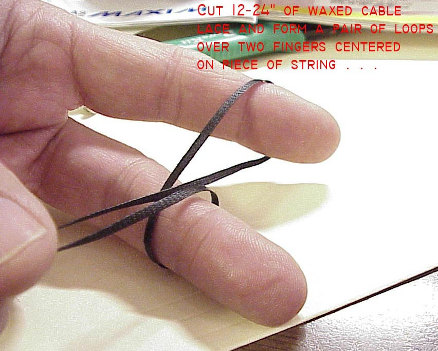
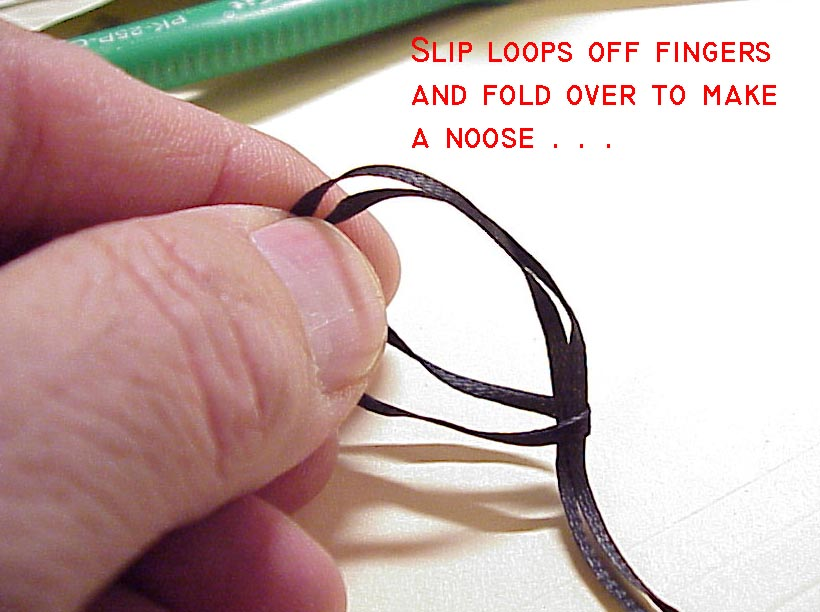
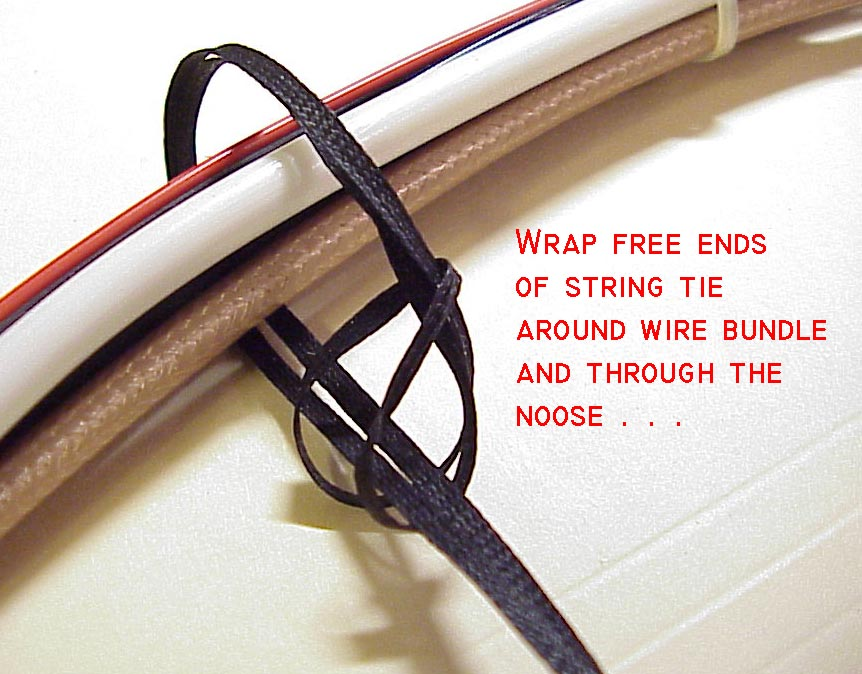
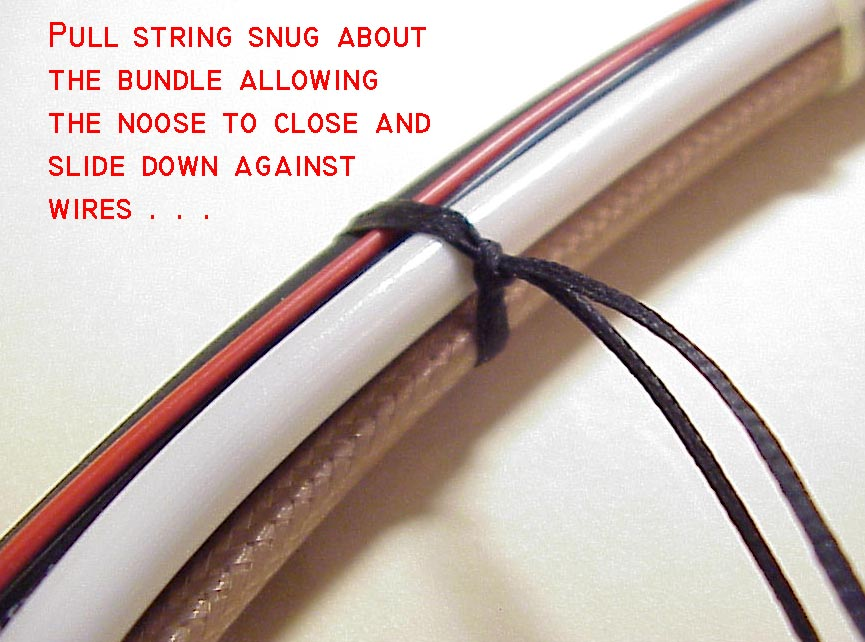
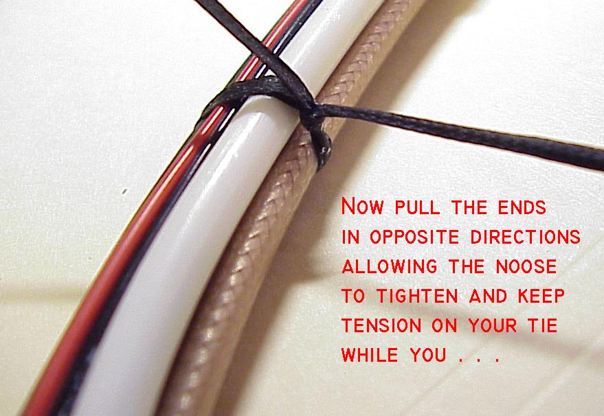
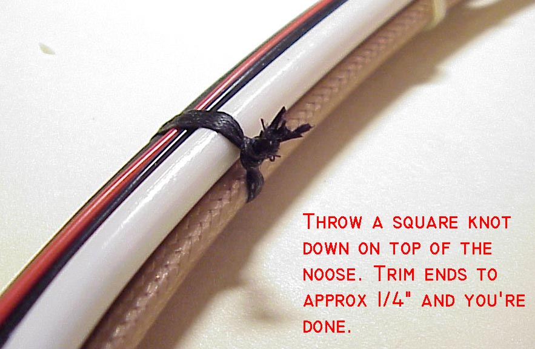
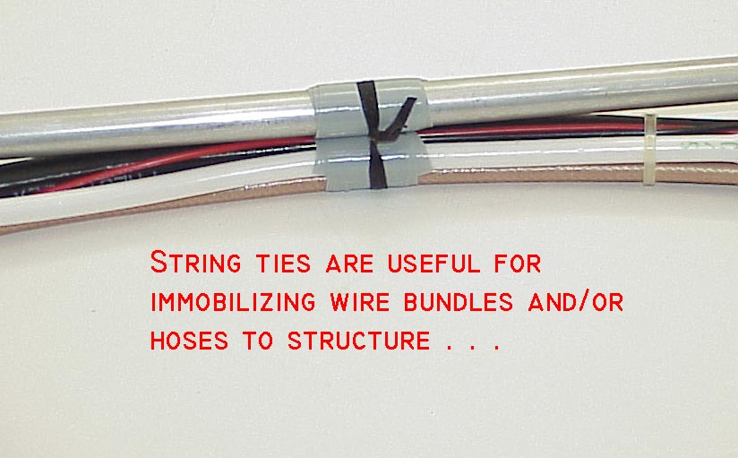
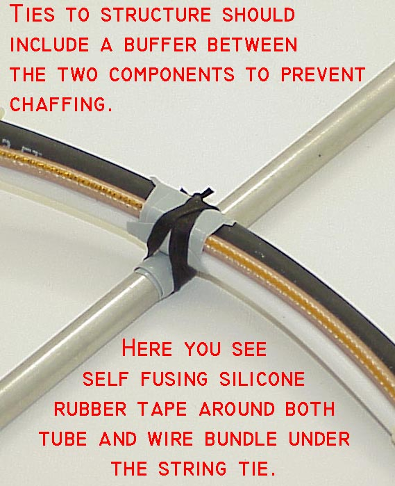

|
Bob's Shop Notes: |
|
String ties on a wire bundle are most acceptable substitutes for nylon tye-wraps
Personally, I prefer string ties over tye-wraps for a finished product. Tye-wraps
leave a bulky, un-yielding lump on the side of a wire bundle. Depending on how
the tye-wrap is cut off, the trimmed end can be sharp. I've offered up many
a blood sacrifice to a project after having been bitten by the end of a clipped
tye-wrap. Type wraps are third only to metal burrs and exposed ends of safety
wire for causing body-leaks. String ties still leave a lump where the knot is but it is less rigid, more rounded and has less tendency to snag. Cut ends of string offer no hazard to contacting body parts. One roll of string can handle ANY bundle tying situation ranging from a few 22AWG wires to a fist full of wires. Further, polyester flat-lace has excellent longevity characteristics under the cowl while nylon tye-wraps fall victim to ozone, hydrocarbons and ordinary embrittlememt due to lost of plasticizers. String ties do take more time and some skill. I like to build a new wire bundle using the cheapest tye-wraps I can buy . . . every time a new wire goes into the bundle, tye-wraps go around it to keep the wire in place. Old tye-wraps are clipped off after they become covered with a few new wires. When the bundle is finished, you can put string ties on and clip ALL of the tye-wraps off. If you're interested in considering this very old but venerable technology for forming wire bundles, an exemplar product can be viewed and purchased on Wicks Aircraft website by clicking here. The lacing tape I've suggested has a wax finish. This wax is just slick enough to let the tape strands slide over each other for uniform tightening and just sticky enough to keep the first tensioning of a knot snug while you throw another knot on top. Here are some tips on how to use the stuff:
|
Method 1 . . . |

|
|  | Method 2 . . .Cut a 12-24" piece of string and loop the center around two fingers as shown. |
|
Click here for larger image. Slip the loops off your fingers and fold to make a "noose" . . .
|
 |
|  |
Click here for larger image. Wrap free ends
of string around wire bundle 1 to 3 times depending on how much of a bear hug
you want to put on the bundle. Bring the free ends through the noose as shown.
|
|
Click here for larger image. Pull the slack out of your string tie allowing the noose to tighten up and migrate down toward the wire bundle.
|
 |
|  |
Click here for larger image.Pull on the free
ends to tighten the grip. This technique can put a lot of force on your victim.
I've used three or four, double-turn string ties as a temporary substitute for
a broken clamp on a radiator hose. I've seen teflon insulation wire bundles tied
so tightly that the insulation cold-flowed and allowed wires to short together.
Take care lest you get carried away with your newly acquired power . . .
|
|
Click here for larger image. Finish off with a
square knot down against the noose. Trim off the free ends. I've known some technicians
who like to use their soldering iron to melt through the free ends instead of
cutting it off. This technique produces a finished end that's similar to flicking-your-BIC
and melting the freshly cut ends of a nylon rope to keep it from fraying. This is
purely a matter of craftsmanship. Your corralled wires are not at risk of getting
loose because your trim-ends are frayed.
|
 |
|  |
Click here for larger image.
|
|
Click here for larger image. String ties can
be used to secure bundles, hoses, etc to each other or to structure. Use a buffer
material between the two components before applying the string tie. Here I've illustrated
a joint buffered with self fusing S894 silicone rubber tape which you can purchase
from B&C's website catalog.
|
 |

|
Click here for larger image. Here's an image
purloined from an old copy of the ARRL Amateur Radio Handbook. A long segment of flat
lace can be used to put a running series of ties on a wire bundle. You'll find that
you can easily work with a piece of string that is 6-8 feet long and place a series
of ties at 1 to 2 inch intervals as suggested in the adjacent figure. This is pretty much
a lost art in production environments but it's easy to do and should get you some
extra points for craftsmanship by judges at an air show.
|
 Click here to contact Bob at AeroElectric Connection Click here to contact Bob at AeroElectric Connection |
{kind=link}
{kind=link}
{kind=link}
{kind=link}
{kind=link}
{kind=link}
{kind=link}
{kind=link}